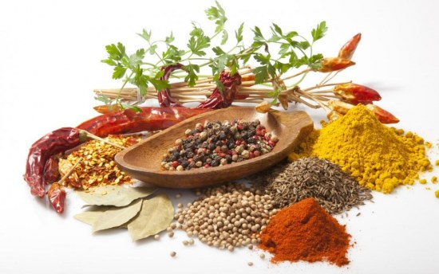
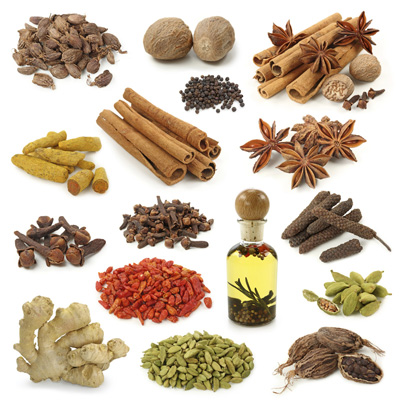

Indian cuisine is ancient, diverse, and steeped in tradition, an amalgam of different ethnic influences, much like the country itself. It is one of the world's most diverse cuisines, characterized by its sophisticated and subtle use of the many spices, vegetables, grains and fruits grown across India. Traditional Indian cuisine is rich and diverse in flavours, using distinct cooking methodologies and authentic utensils, originating from a particular region in India.
India has an extremely large repertoire of cuisines. A typical Indian meal combines salty, sweet, creamy, spicy, hot and pungent flavors. The traditional food of India has been widely appreciated for its fabulous use of herbs and spices and most frequently used spices are black pepper, black mustard seed, cumin, turmeric, fenugreek, asafoetida, ginger, garlic, cardamom, cinnamon, clove, curry leaves and dried red chilis.
Indian cuisine is rich and aromatic with a liberal use of exotic spices and ghee. The vegetables and greens are prepared with various different masala's giving the same vegetable different flavours.
Whole wheat flour or atta is the main ingredient used to make unleavened flatbreads like roti, phulka and Chapati. Other breads like puri and bhatura, which are deep fried in oil, are also common. Gravies are typically dairy-based like milk, paneer, ghee(clarified butter), and yogurt are all common ingredients.
Indian cuisine offers a rich array of desserts which tend to be quite sweet and are often based on milk, grains, fruit, or nuts.